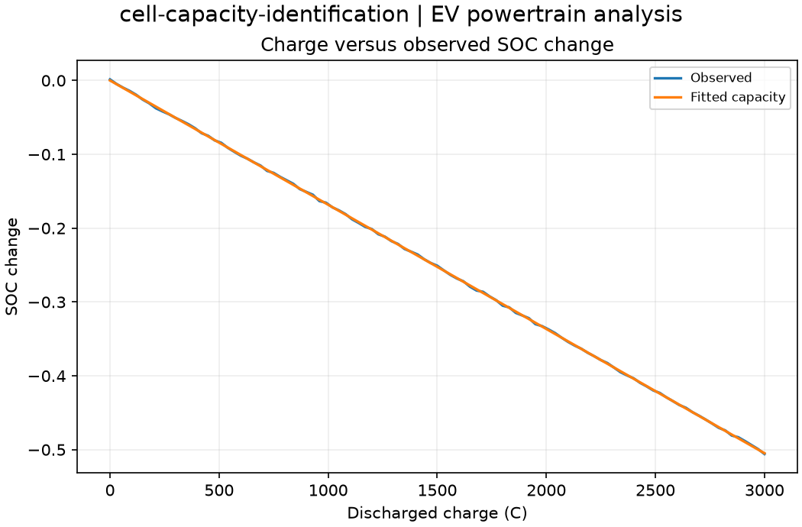

Reproducible EV powertrain analysis. Units and field components are printed on the scientific axes. peak d-q quantities use exp(+i omega t); terminal currents point into the protected line.
Sealed numeric archive | Summary CSV | Physical parameters | Run request | Source and environment

| capacity_ah | 1.6507075583989355 |
|---|---|
| charge_rmse_c | 5.734851553557286 |
These are simulations, not hardware measurements. Network-model, measurement, timing and statistical uncertainty require distinct convergence checks. Singular or unilluminated data use explicit masks.
Source revision: f89042618d0884ff741ae8772ede08dc1648c042.
Dirty checkout: False.
Configuration SHA-256: 5e317fbd925836daab7298d9d3d7cf0a9113d4fb6b27970d2a717310467f2605.
Replay preserves original source and parameter provenance. SHA-256 manifests detect changed bytes; they are unsigned integrity records, not certificates of physical validity.